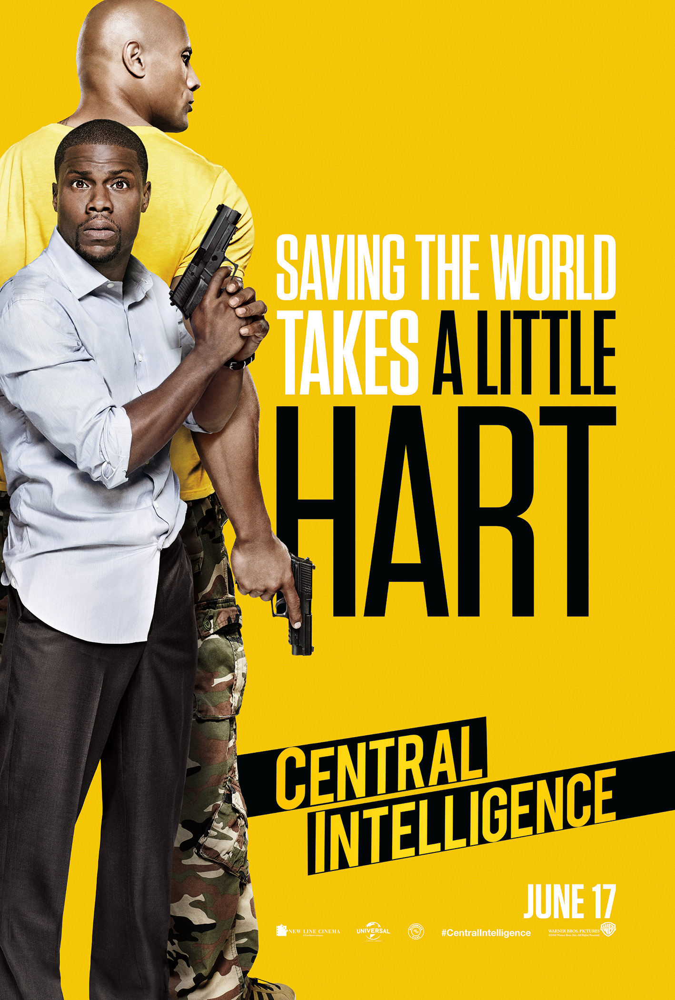
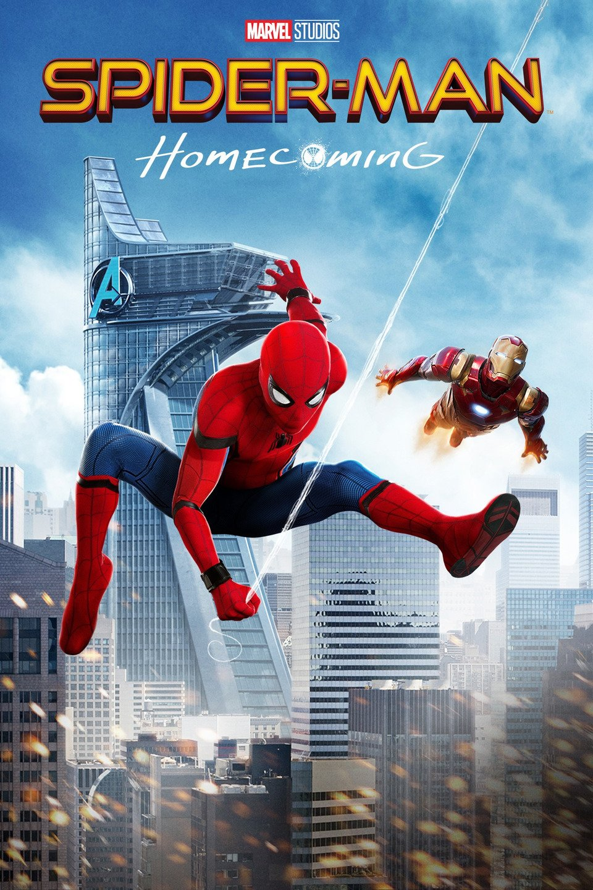

| Bullied as a teen for being overweight, Bob Stone (Dwayne Johnson) shows up to his high school reunion looking fit and muscular. While there, he finds Calvin Joyner (Kevin Hart), a fast-talking accountant who misses his glory days as a popular athlete. Stone is now a lethal CIA agent who needs Calvi… | Central Intelligence |  |
|---|---|---|
| Ready Player One | From filmmaker Steven Spielberg comes the science fiction action adventure “Ready Player One,” based on Ernest Cline’s bestseller of the same name, which has become a worldwide phenomenon. The film is set in 2045, with the world on the brink of chaos and collapse. But the people have found salvation | |
| Thrilled by his experience with the Avengers, young Peter Parker returns home to live with his Aunt May. Under the watchful eye of mentor Tony Stark, Parker starts to embrace his newfound identity as Spider-Man. He also tries to return to his normal daily routine -- distracted by thoughts of proving… | Spider-man Homecoming |  |